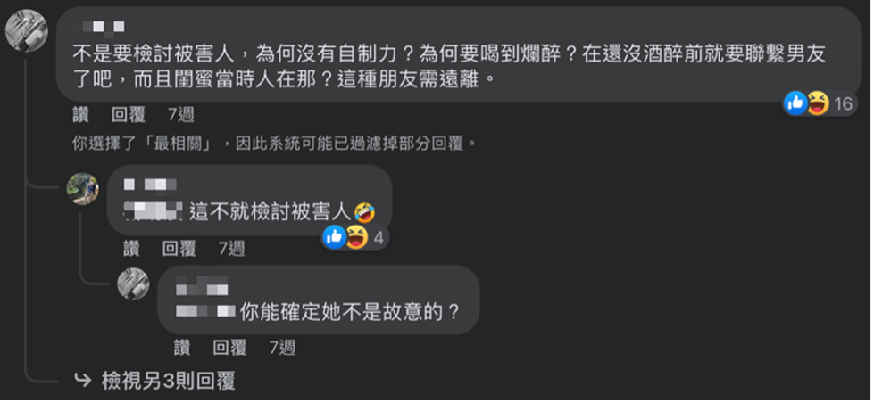

`
What is Victim Blaming?
The definition in Canadian Resource Centre for Victims of Crime (2009) is “Victim blaming is a devaluing act that occurs when the victim(s) of a crime or an accident is held responsible — in whole or in part — for the crimes that have been committed against them".
Other words, victim blaming is about distrust and disbelief in victims, which people generally think that victims are lying or being suspicious in the reporting events, so they call on the prosecution or the public to pay some special attention to victims, instead of the suspect (Elizabeth Conaway, 2017).
Additionally, victim blaming is an action of preserving the interest of the privileged group in power, and justifying abuse or social injustice (William Ryan, 1971; Julia C. Schoellkopf, 2012).
`,
`
Why do people blame victims?
`,
`
Just World Hypothesis
People believe that the world is a fair, predictable, and stable environment and that behavioral outcomes are deserved thus allowing us to maintain a sense of control and efficacy over the environment. (Gravelin et al, 2019; Anderson et al, 2001)
That is to say, victim blaming is a way for them to reinforce their values and regard victims as biases by questioning victims why not behaving themselves like the others, so the world will treat them fairly.
`,
`
Attribution Error
In this point, people believe that the world is logical, where there's smoke, there's fire, rape is also executed in rational.
They perceive the victim as deserving of the misfortune helps to restore the comfortable view of the world as fair and ordered.
Thus, attributions commenting on the victim's behavior, lack of awareness of potential danger or explicit victim blaming (Anderson et al, 2001).
`,
`
Invulnerability Theory
This theory asserts that people would like to believe they are different from those victims, they are invulnerable, safe from harmful and gruesome acts against them.
Furthermore, blamers create an idea of "victim fault", it is a kind of using labels to identify behaviors and explain the unfortunate circumstances, such as a rape victim, must have done something to motivate or even invite the rape, which makes victims themselves vulnerable (Conaway, 2017; Gravelin et al, 2019).
Although there are three main theories that researchers try to explain the motivation of victim blaming, it is not independent factors having effect on the individuals. So, it is possible that individuals could fit in those theories at the same time.
`,
`
Victim blaming gender inequality
In victim blaming circumstances, men attribute greater blame on rape than women who are also significantly influenced by Just World Hypothesis (Caitlin M. Pinciotti & Holly K. Orcutt, 2021; Renata Bongiorno, 2020).
Furthermore, Renata (2020) indicates that the male-perpetrator empathy is equally or much higher than female-victim empathy.
The reason that having more empathy with the male-perpetrator is to avoid the threat to male dominant society. Male victim blamers are more willing to believe that the male perpetrators did not mean to do it.
In other words, it has been embedded within culture that women are lesser than men and viewed as subordinated. Women are not allowed to challenge the male dominant world, even if they are be raped, they will be considered as a result of enticement to male. And the male-perpetrators are just doing the things that the female-victims want them to do.
`
`
The Comments
We found that there are lots of phenomena of victim blaming in Taiwan, and it especially happened on the Internet. Below are people's reaction on some cases of rapes from the news in Taiwan. We can see how people reply to the incident under the comment section.

“I am not blaming the victim, but why does she have no self-control? Why did she make herself fuddle? She should have contacted her boyfriend before she got wasted. Besides, her bestie was just next to her? She should end the friendship with this kind of bestie.”
“This is totally what victim blaming is.”
“How can you be sure that she didn't mean to do it?”
“She deserved this as a playgirl. She should behave herself while having a relationship with her boyfriend. Besides, girl hangout with her friend and got wasted, isn't it means okay to others to have sex with her?”
A Small Conclusion
From these comments, we can see people blamed victims, and trying to argue the victim made it happened. They rather believe that this happened naturally, because victims did something wrong that leads them to those misfortune.
To explain why these phenomenon keep happening, we need take deep dive into the literatures.
`;
wearing_3
A swimsuit. We had been canoeing at the river all day. It had been a really fun time. Then they came in to my tent when I was trying to change clothes.
wearing_4
Khakis and a dress shirt. I had to give a presentation that day in my communications class. They took my clothes at the hospital during my rape exam. I'm not sure what happened to them.
wearing_5
A cute mini-dress. I loved it the moment I saw it. I had some killer heels, too. I just wanted to have a good time that night, look cute, and hang with my sisters. He kept getting me shots, over and over again. The next thing I remember is crawling around on the floor looking for that stupid dress.
wearing_9
Navy blue tank and plaid shorts. Nothing special - no make-up - and sandals. We were just supposed to be hanging out. I didn't think anything about it.
wearing_11
Nike shorts and a concert sweatshirt. Seems so normal. So every day. It was too, just any other day, except for this. Except for what happened.
wearing_13
Jean shirt, jeans, and Toms. Everyone seems so confused when I tell them this. Like they can't understand what I am saying. They can't understand what I was wearing. It's almost funny. Almost.
wearing_14
Jeans and an oversized tie dye shirt. She was like a sister to me. There had never been anything like that between us. Then it was like a switch flipped in her and all of a sudden what I didn't want didn't matter.
wearing_15
Army ACU's and I was carrying a gun. So much for that preventing anything.
Joanna
Main edit of the project and the documnet.
Jazz
Help write the motivation and misc.
Edsome
The creator of this website.
Rita
Help filtering comments and translate them into English.
Picture from Feminism In India : https://feminisminindia.com/2019/12/20/victim-blaming-garb-women-empowerment/